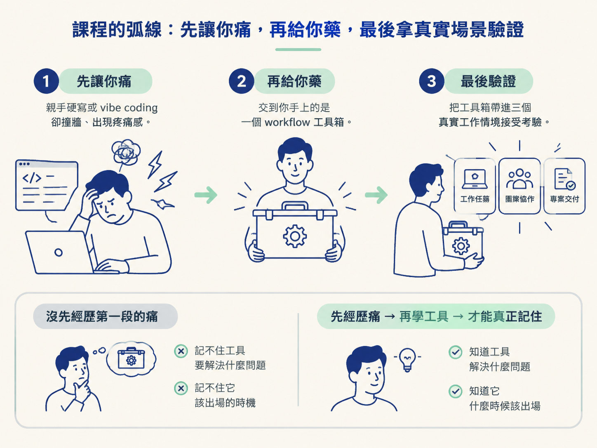
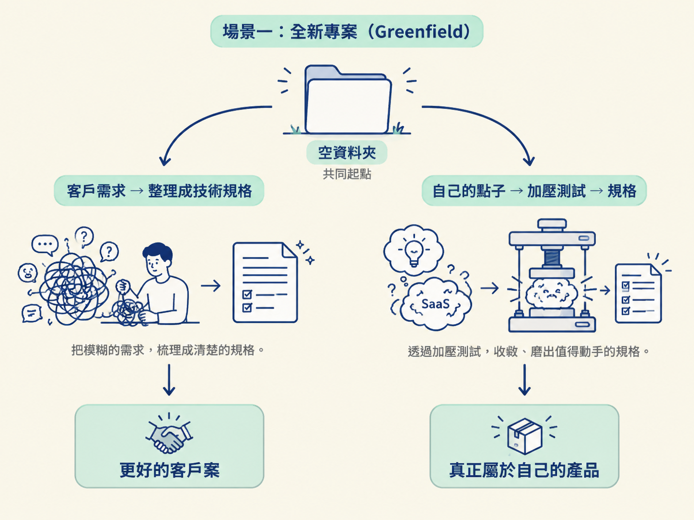
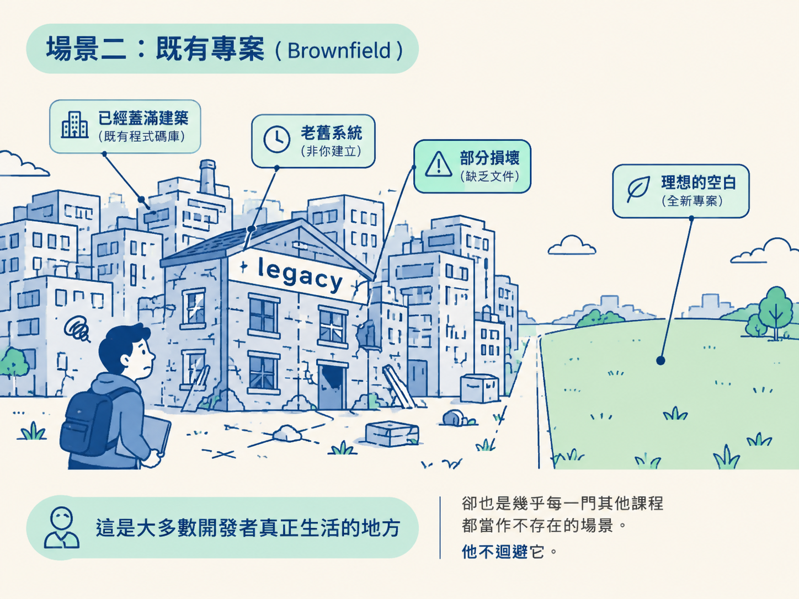

能分辨課程會帶你走過的兩個實戰場景：從空資料夾開始的 greenfield（客戶案／自己的點子），以及在既有程式碼上動工的 brownfield（含 legacy）。也要說得出來，課程為什麼要這樣安排順序：先感受痛、再給 workflow、最後跑真實場景。
你可能遇過這種課：它把一套 workflow 和幾個自訂 skill 塞到你手上，然後就沒有然後了。從頭到尾，它沒示範過這些東西進到真實工作環境之後會長什麼樣子。
於是出現一個很常見的下場：流程你背得很熟，但不知道什麼時候該把它拿出來。等專案變舊、程式碼開始長灰，你更不確定這套東西還靈不靈。
這門課想避開這種斷層，所以刻意走一條「先痛過、再給解法」的路線。這一節就是把那條路線的地圖攤開。在你一頭栽進去之前，先看清楚這趟旅程會經過哪些真實場景，以及順序為什麼這樣排。
這門課的順序帶著一種設計感，可以拆成三段。
第一段，它先示範「不要怎麼寫程式」：親手硬寫，或者 vibe coding。聽起來有點奇怪：它明明知道 vibe coding 看起來很輕鬆，卻還是要你先走一遍。講師的判斷是，這條路看起來容易，實際上才是比較難的那條。唯有你親身踩過，才會真的感覺到問題在哪裡。而那份痛感，正是後面學習的動機。
第二段，才把 workflow 交給你。
第三段最關鍵：拿這套 workflow 去跑過三個你在真實工作裡真的會遇到的情境，讓它接受現實的考驗。
這種「先痛、再給藥、再驗證」的排序不是故弄玄虛。它在處理一個常見毛病：如果你沒先痛過，就記不住每個工具到底要解決什麼問題。學完只記得工具的形狀，記不住它該出場的時機。

第一個大場景是從零開始的專案。業界用 greenfield（綠地）來形容它：眼前是一片空地，上面沒有任何既有建築，你想蓋什麼都行。
不過同樣從空資料夾起步，其實分成兩條完全不同的路。
第一條是把客戶的需求變成規格。客戶會丟給你一組需求，而這些需求往往模糊、只成形一半，有時候甚至有點荒唐。你的工作不是照著它們隨手開工，而是把這團亂麻整理成一份真正的技術規格，讓你的 agent 有東西可以照著建。
這條路最適合接案的自由工作者，或正在經營軟體公司的人。它訓練的是把混沌轉成清楚規格的能力，而這正是能接到更好案子、拿到更好價碼的關鍵。
第二條是做自己的點子。也許你想替自己做一個 SaaS。這條路會用一個特別的 skill，在寫下任何一行程式碼之前，先替你的點子「加壓測試」：逼問它、收斂它，把模糊的想像磨到真的值得動手，然後才變成規格。
兩條路的起點一樣都是空資料夾。一條通向更好的客戶案，另一條通向做出真正屬於自己的產品。

第二個大場景是在既有專案上動工，也就是 brownfield（棕地），地上已經有蓋好的東西，你不是從零開始，只是要加下一個功能。講師特別強調：這才是開發者日常最常見的現實。
brownfield 裡還有一個更硬的子類別：legacy 程式庫。它指的是那些不是你寫的、年代久遠、有些地方早已壞掉、慣例也沒留下任何文件的程式碼。而你就這樣被丟了進去。
講師說得很直接：這是大多數開發者真正生活的地方，卻也是幾乎每一門其他課程都當作不存在的場景。他不迴避它。

針對既有專案，這套 workflow 有一條直接切進去的路徑。它會跳過你不需要重複的前置規劃，因為專案已經存在，那些從零開始的規劃步驟對你來說是多的。這正是把同一套流程用在不同場景時，需要懂得變通的地方。
你可能會想：反正照著課程走就會遇到，何必先知道？
差別在於，先看見這兩個場景，你才會用對的期待去學。之後你看到某個 skill，知道它不是抽象招式，而是某個具體場景裡的解法。當課程切進 legacy 章節時，你也不會覺得突兀，因為你早就知道那是整份地圖的一部分。
講師的最終目標，是讓你走完之後不只是收集了一堆 skill，而是清楚知道每一個要在什麼時機、用什麼方式拿出來。
課程的實戰地圖有兩個大場景。Greenfield 是從空資料夾開始的全新專案，又分成接客戶的案子（把模糊需求轉成技術規格）與自己的點子（用一個 special skill 先淬煉，再變成規格）。Brownfield 是在既有程式碼上動工，是最常見的日常，其中還包含你沒寫過、又舊又半壞、又沒文件的 legacy 專案。整門課先用「手寫或 vibe coding」讓你親身感受痛，再交給你 workflow，最後拿它跑過這兩個場景。目的不是讓你收集工具，而是讓你清楚知道何時、如何伸手拿哪一個。
場景分清楚了，接下來該把工具裝到手上。下一節要動手把 coding agent 的環境裝好：安裝 CLI 與編輯器擴充，並弄清楚工具選擇與付費方案該怎麼決定。